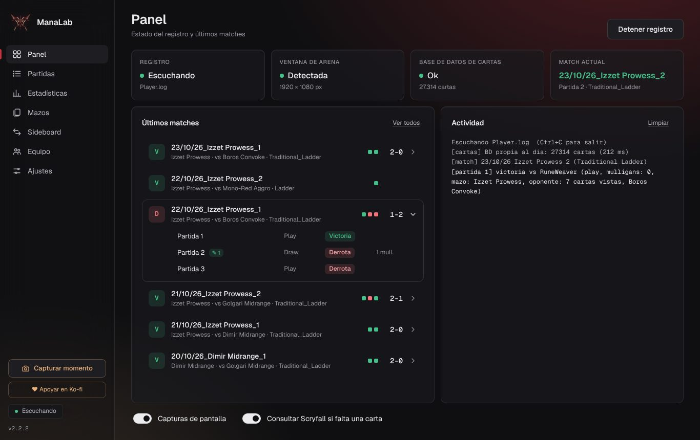

Cada match de Arena, registrado solo.
ManaLab lee el log de Arena mientras juegas y guarda tus manos iniciales, mulligans, si ibas on the play o on the draw, los cambios de banquillo y el mazo del rival. Después te enseña dónde ganas y dónde pierdes.

Sabe qué salió mal en cada derrota
La app es gratis. Solo el análisis con IA es de pago.
Abre cualquier derrota y pregunta a la IA qué salió mal, dónde podías haber jugado mejor y qué probar la próxima vez. Lee los datos de la partida, no tu nombre ni el del rival.
Hasta 30 análisis al día. Recibes tu código por correo en cuanto te suscribes.
Cancelas cuando quieras: si no renuevas en Ko-fi, el código caduca solo.
Del log de Arena a tu historial
Con el «Registro detallado» activado, Arena escribe cada partida en el Player.log. ManaLab lo lee mientras juegas y lo convierte en matches que puedes revisar.
[UnityCrossThreadLogger] GreToClientEvent
{ "type": "GREMessageType_MulliganReq",
"systemSeatIds": [1] }
[UnityCrossThreadLogger] GreToClientEvent
{ "gameInfo": {
"matchState": "MatchState_GameComplete",
"gameNumber": 3,
"results": [{ "result": "ResultType_WinLoss",
"winningTeamId": 1 }] } }Todo lo que apuntarías después de cada match, ya apuntado
Matches y partidas
Cada Bo3 es una fila con su marcador (2-1, 1-2…) que se despliega en sus partidas: play o draw, resultado y mulligans.
Manos y capturas
Tu mano inicial, la que te quedaste y una captura de cada momento clave para revisar la partida después.
Mazo del rival
Compara las cartas del rival con los mazos más jugados del meta de Standard y le pone el que más coincide. La lista del meta se actualiza cada 3 días.
Estadísticas
Winrate de matches y de partidas, rachas, últimos días y desgloses por mulligans, play/draw, mazo y arquetipo rival.
Tus mazos
Cada lista que juegas con su winrate. Las variantes de banquillo se agrupan bajo el mismo mazo y puedes renombrarlas.
Análisis de derrotas con IA (suscriptores)
Los suscriptores reciben un análisis con IA de cada derrota: qué salió mal, dónde podías haber jugado mejor y qué probar la próxima vez. Suscripción: 5 € al mes, en Ko-fi.
Overlay mientras juegas
Una ventana aparte junto a Arena con las cartas que te quedan por robar, las que has visto del rival y el turno. Solo muestra lo que el propio juego ya hace público.
Guía de sideboard
Por matchup, qué metiste y qué sacaste en tus propias partidas y cómo te fue, para dejar de ir de memoria en el sideboard.
Coach y equipo
Etiquetas de error y notas en cada partida, tablas de matchups e informe para tu coach. El modo equipo comparte los datos a través de una carpeta común.
Pensada para revisar, no para rellenar
Capturas con datos de ejemplo.
Cuatro pasos, una sola vez
Descarga y abre
Windows 10 u 11. Descomprime el ZIP y abre ManaLab.exe. No hace falta instalar nada.
Activa el log de Arena
En Arena: Opciones › Cuenta › Registro detallado. Sin esto, Arena no escribe las partidas.
Pulsa «Iniciar registro»
Abre ManaLab antes de jugar y déjalo en marcha. Cada match aparece en el Panel al terminar.
Juega y revisa
Juega con Arena en ventana o sin bordes y revisa tus partidas en Partidas. La app es gratis. Si quieres el análisis de tus derrotas con IA, suscríbete en Ko-fi (5 € al mes) y pega el código en Ajustes › IA.
Antes de empezar
¿Toca el juego o me da ventaja en la partida?
No. Solo lee el archivo de log que el propio Arena escribe en tu PC. No modifica Arena, no lee su memoria y no se conecta a sus servidores. El overlay opcional es una ventana aparte que solo muestra información que el propio juego hace pública (tus cartas jugadas y las del rival reveladas), nunca información oculta.
¿Qué datos envía?
Tus partidas, capturas y estadísticas se quedan en una carpeta de tu PC. El programa solo descarga la lista actualizada de mazos del meta (cada 3 días) y, si a la base de datos de Arena le falta una carta, su nombre en Scryfall. Las dos cosas se pueden desactivar en Ajustes. Solo envía datos cuando pides el análisis con IA: entonces envía los datos de esa partida (resultado, mazo, manos, cartas vistas y cronología), nunca tu nombre ni el del rival.
Windows dice «Windows protegió su PC». ¿Es seguro?
Ese aviso sale con los programas que no tienen un certificado de firma de pago, algo habitual en herramientas gratuitas pequeñas. Pulsa «Más información» y luego «Ejecutar de todas formas». Cada versión se comprueba en VirusTotal antes de publicarla.
¿Funciona en Mac o en Limitado?
De momento es para Windows. Registra cualquier partida de Arena, también de Limitado, aunque la detección del mazo rival usa el meta de Standard.
¿Es gratis?
El programa es gratis, sin anuncios ni cuentas. Lo único de pago es el análisis de derrotas con IA: 5 € al mes, que pagan el servicio de IA que usa. Todas las demás funciones son gratis.
¿Cómo consigo el análisis con IA?
Suscríbete en Ko-fi. Tras el pago recibes un código de suscripción por correo. Pégalo en Ajustes › IA (suscripción) y el análisis aparece en la pestaña Análisis de cada derrota.
Gratis, con análisis de IA por suscripción
ManaLab se hace en ratos libres. El programa sigue siendo gratis. La suscripción de 5 € al mes paga el servicio de IA; los donativos ayudan al resto del proyecto.